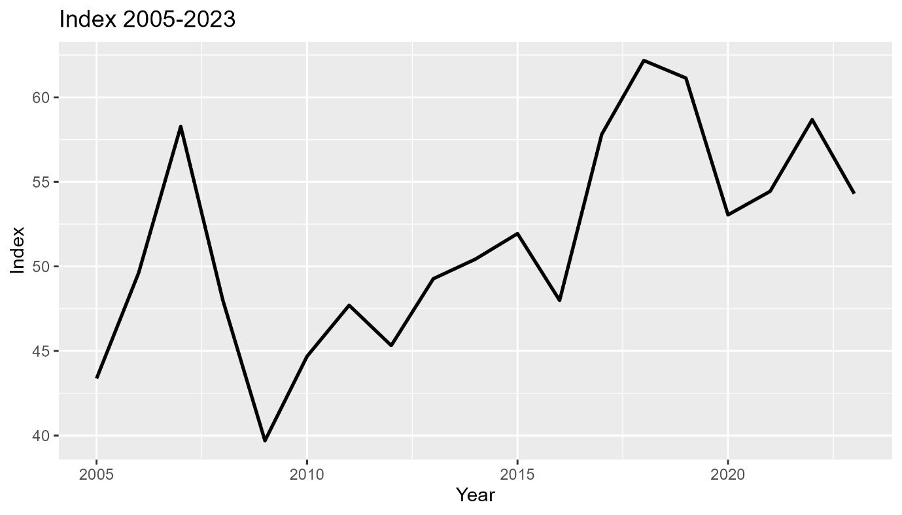
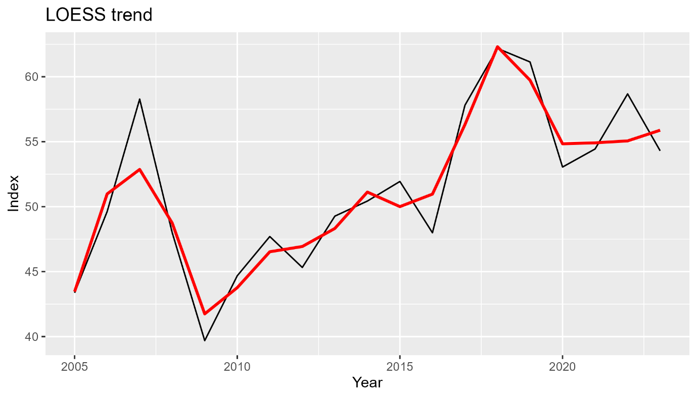
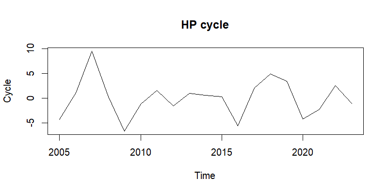
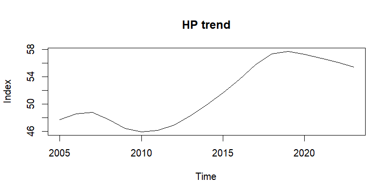
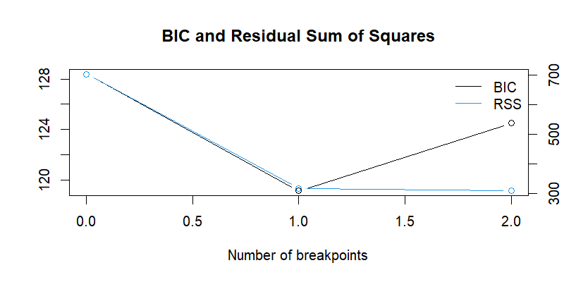
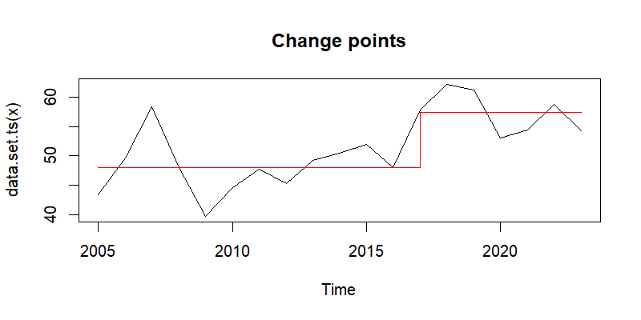

time series analysis of index scores in R
Download original formatINDEX SCORES 2005 – 2023
INTRODUCTION
Objective
This project examines nineteen annual index scores covering 2005-2023. I applied standard univariate time-series tools in R (packages: readxl, ggplot2, mFilter, strucchange, changepoint, forecast, tseries).
The workflow:
load the data with COINr
create a yearly ts object
generate trend estimates (LOESS, Hodrick–Prescott)
scan for structural breaks (Bai–Perron) and change points (PELT)
flag local outliers with tsoutliers()
The was the block of code used to achieve this:
| pkgs <- c("readxl","ggplot2","mFilter","strucchange", |
| "changepoint","forecast","tseries") |
| for (p in pkgs) if (!requireNamespace(p, quietly = TRUE)) install.packages(p) |
| invisible(lapply(pkgs, library, character.only = TRUE)) |
| data_path <- "tsdata.xlsx" |
| dir_out <- "." |
| dir.create(dir_out, show = FALSE) |
| dat <- read_excel(data_path, col_names = TRUE) |
| colnames(dat)[1:2] <- c("Year","Score") |
| stopifnot(nrow(dat) == 19) |
| ts_idx <- ts(dat$Score, start = dat$Year[1], frequency = 1) |
| df <- data.frame(year = dat$Year, idx = dat$Score) |
| skip_step <- function(msg, stub) |
| write(msg, file = file.path(dir_out, paste0(stub,"_SKIPPED.txt"))) |
| p_raw <- ggplot(df, aes(year, idx)) + |
| geom_line(linewidth = 0.9) + |
| labs(title = "Index 2005-2023", x = "Year", y = "Index") |
| ggsave("raw_series.png", p_raw, width = 7, height = 4, dpi = 300) |
| lo <- loess(idx ~ year, data = df, span = 0.4) |
| df$trend_loess <- predict(lo) |
| p_loess <- ggplot(df, aes(year, idx)) + |
| geom_line() + |
| geom_line(aes(y = trend_loess), colour = "red", linewidth = 1) + |
| labs(title = "LOESS trend", x = "Year", y = "Index") |
| ggsave("loess_trend.png", p_loess, width = 7, height = 4, dpi = 300) |
| hp <- try(hpfilter(ts_idx, freq = 6.25), silent = TRUE) |
| if (inherits(hp, "try-error")) { |
| skip_step("HP filter failed", "hp") |
| } else { |
| png("hp_trend.png", 800, 400, res = 120) |
| plot(hp$trend, main = "HP trend", ylab = "Index"); dev.off() |
| png("hp_cycle.png", 800, 400, res = 120) |
| plot(hp$cycle, main = "HP cycle", ylab = "Cycle"); dev.off() |
| } |
| bp <- try(breakpoints(ts_idx ~ 1, h = 5), silent = TRUE) |
| if (inherits(bp, "try-error")) { |
| skip_step("Breakpoint routine did not converge", "structural_breaks") |
| } else { |
| png("structural_breaks.png", 800, 400, res = 120) |
| plot(bp); dev.off() |
| write.csv(data.frame(breakpoints = bp$breakpoints), |
| "breakpoints.csv", row.names = FALSE) |
| } |
| cp <- cpt.meanvar(ts_idx, method = "PELT") |
| png("changepoints.png", 800, 400, res = 120) |
| plot(cp, main = "Change points"); dev.off() |
| saveRDS(cp, "changepoints.rds") |
| outs <- tsoutliers(ts_idx) |
| out_df <- data.frame(year = time(ts_idx)[outs$index], |
| score = ts_idx[outs$index]) |
| write.csv(out_df, "outliers.csv", row.names = FALSE) |
| save.image("analysis_workspace.RData") |
These are the files produced by the script:
| File | What it shows |
| raw_series.png | Original path of the index |
| loess_trend.png | LOESS smoother (red) versus data (black) |
| hp_trend.png | Hodrick-Prescott long-run trend |
| hp_cycle.png | Hodrick-Prescott short-run cycle |
| structural_breaks.png | BIC + RSS curves that pick the break count |
| breakpoints.csv | Year indices of Bai–Perron breaks |
| changepoints.png | PELT mean-shift illustration |
| outliers.csv | List of years flagged as local extremes |
DATA OVERVIEW
Scores rise from 43.37 (2005) to 58.28 (2007), slide to the series low of 39.69 (2009), recover to 51.94 (2015), ease to 47.99 (2016), jump to 57.81 (2017), then peak at 62.18 (2018) and 61.14 (2019). A drop to 53.05 (2020) follows, after which the index stabilises in the mid-50s to 54.44 (2021), 58.68 (2022), and 54.30 (2023). The figure below traces this complete, gap-free sequence and sets the baseline for all subsequent analyses.

| Year | Score |
| 2005 | 43.37 |
| 2006 | 49.62 |
| 2007 | 58.28 |
| 2008 | 48.00 |
| 2009 | 39.69 |
| 2010 | 44.68 |
| 2011 | 47.70 |
| 2012 | 45.32 |
| 2013 | 49.27 |
| 2014 | 50.43 |
| 2015 | 51.94 |
| 2016 | 47.99 |
| 2017 | 57.81 |
| 2018 | 62.18 |
| 2019 | 61.14 |
| 2020 | 53.05 |
| 2021 | 54.44 |
| 2022 | 58.68 |
| 2023 | 54.30 |
Trend decomposition
LOESS smoother
Method Locally weighted regression (loess, span 0.4). Why Flexible smoother that follows gradual movements. Observation Trend rises 2005-2007, dips 2008-2010, rises again until 2019, then plateaus.

Hodrick-Prescott filterMethod hpfilter(), λ = 6.25 (annual data). Why Splits the series into long-run path and short-run deviations. Observation The HP trend matches LOESS. The cycle shows two clear negatives (2009, 2020) and a strong positive hump (2018-2019).


Turning-point analysis
Structural break test (Bai–Perron)

| breakpoints |
| 12 |
Method breakpoints(ts_idx ~ 1, h = 5). Why Detects discrete mean shifts. Result One break between 2016 and 2017; mean index level rises by roughly nine points.
Change-point scan (PELT)
Method cpt.meanvar() with PELT. Why Cross-check for mean/variance shifts. Result Same split: regime 1 (2005-2016) and regime 2 (2017-2023).

METHOD
Pre-processing I loaded the Year and Score columns into a yearly ts object (frequency = 1). The sheet contained every year from 2005-2023 with no blanks, so no cleaning step was needed. Starting with a gap-free series avoids errors in all later routines.
Trend extraction LOESS – I ran loess(idx ~ year, span = 0.4). The local fit adapts to nearby values and traces the underlying direction without forcing a fixed formula.
Hodrick–Prescott – I applied hpfilter(ts_idx, λ = 6.25). This split produced a smooth long-run path and a residual cycle, letting me comment separately on overall growth and short swings.
Turning-point tests Bai–Perron – Using breakpoints(ts_idx ~ 1, h = 5), I checked for shifts in the unconditional mean; the five-year minimum segment length limits false cuts in a short sample.
PELT – I followed up with cpt.meanvar(ts_idx, method = "PELT"). The exact search confirms whether mean or variance changes occur at the same points, providing a second view on structural shifts.
Outlier scan I called tsoutliers(ts_idx), which compares each score with a one-step ARIMA forecast and flags any observation that lies outside the model’s expected range. No rows were flagged, so the CSV output is empty.
Results
Trend behaviour
LOESS and the HP trend agree on three phases: an early climb (2005-2007), a dip (2008-2010), and a steady rise to 2019. A mild reduction follows 2020. The HP cycle highlights negative swings in 2009 and 2020, positive peaks in 2018-2019.
Breaks and change points
Both Bai–Perron and PELT identify one structural shift falling between 2016 and 2017. The mean index level rises by roughly nine points after that date; no further breaks are detected once this step is in the model.
Outliers
I used tsoutliers() to compare each observation with a one-step ARIMA forecast. The function did not flag any year; outliers.csv contains only the column headers (year, score). This outcome is consistent with the moderate swing size seen in the Hodrick–Prescott cycle: every point stays inside the model’s expected range.
Interpretation
The index moved to a higher plateau starting in 2017; the break tests and mean-shift chart confirm this.
Short-run volatility is moderate; deviations rarely exceed ±10 points.
The 2009 trough and 2018 peak are isolated events, not the start of new regimes.